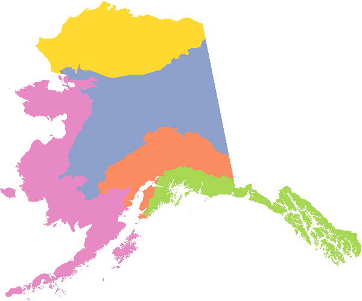
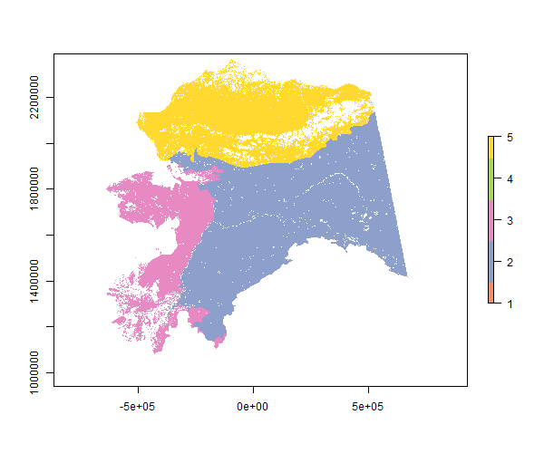

While snappoly is a data package, it does contain one helper function that prints out a simply summary of all the available data sets in the package along with some basic metadata. If you are new to the package or just need a quick reminder of what data you were using previously, this is a convenient way to get started.
library(snappoly)
snappolys()
#> # A tibble: 8 x 7
#> data domain features variables id multilevel description
#> <chr> <chr> <int> <int> <chr> <lgl> <chr>
#> 1 alaska ak 1 2 <NA> F Domain mask
#> 2 canada akcan 13 5 NAME F Domain mask
#> 3 ecoreg ak 32 8 COMMONER T Alaska ecologica~
#> 4 aklcc ak 5 6 LCC_Name F Landscape Conser~
#> 5 lcc akcan 5 3 LCC_Name F Landscape Conser~
#> 6 cavm ak 3 4 Name T Alaska circumpol~
#> 7 fmz ak 14 5 REGION F Alaska Fire Serv~
#> 8 tpa akcan 8 5 MGT_AGENCY F Alaska/Canada te~Load the raster package, which provides a compact print function for the SpatialPolygonsDataFrame objects in snappoly. Here is the Alaska LCC domain map.
library(raster)
aklcc
#> class : SpatialPolygonsDataFrame
#> features : 5
#> extent : -738286.4, 1491802, 517942.6, 2378458 (xmin, xmax, ymin, ymax)
#> coord. ref. : +proj=aea +lat_1=55 +lat_2=65 +lat_0=50 +lon_0=-154 +x_0=0 +y_0=0 +datum=NAD83 +units=m +no_defs +ellps=GRS80 +towgs84=0,0,0
#> variables : 6
#> names : LCC_Name, Acres_, Shape_Leng, Shape_Le_1, Shape_Area, Unit.ID
#> min values : Arctic LCC, 93457602, 11965337, 11941320, 1.353159e+12, 1
#> max values : Western Alaska LCC, 728185322, 133482546, 133482546, 3.782110e+11, 5To access documentation on this data set, use help(aklcc) or the alias ?aklcc.
TO create a basic plot, coloring in different polygons, it is not necessary to explicitly load any additional packages.
clrs <- c("#FC8D62", "#8DA0CB", "#E78AC3", "#A6D854", "#FFD92F")
plot(aklcc, col = clrs, border = NA)
While the raster package is loaded, use some other functions on the Alaska LCC data set.
In addition to extent, the functions xmin, xmax, ymin and ymax are available for individual boundary values. The Alaska Albers equal area conic projection is shared across all data sets in snappoly. This is also consistent with data sets in the snapgrid package.
If you want to rasterize polygons from snappoly it can be as simple as rasterizing a map using its own extent.
You will likely want to provide additional arguments to raster than just the extent, such as nrows and ncols, or resolution. Otherwise the resulting raster will default to 180 rows by 360 columns with interpolated x and y cell resolutions. Another option is to rasterize polygons from snappoly based on a raster layer from the snapgrid package if you want to work with them together in the same format. For example, rasterize the AK LCC polygons using the Alaska ALFRESCO spatial flammability domain, as utilized by the JFSP project and others. Then mask to this domain.
library(snapgrid)
r <- mask(rasterize(aklcc, swflam), swflam)
plot(r, col = clrs)
The snapgrid package is also recommended. Data sets included there are not duplicated in vectorized form here. These two packages compliment one another and each offers data sets that are most commonly utilized at SNAP in the respective vector or raster format. For a similar introduction to snapgrid, see the corresponding vignette to get started.